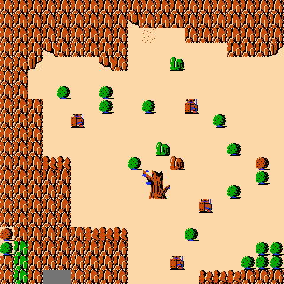
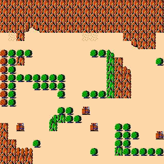
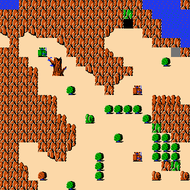
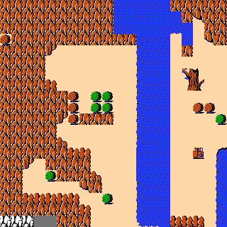
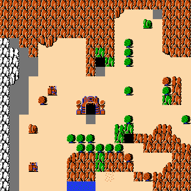
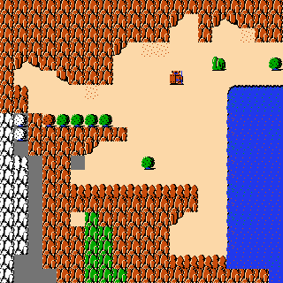
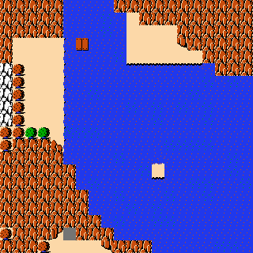
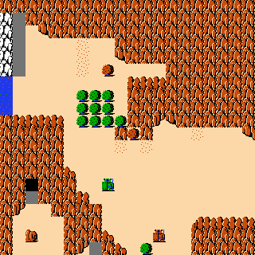
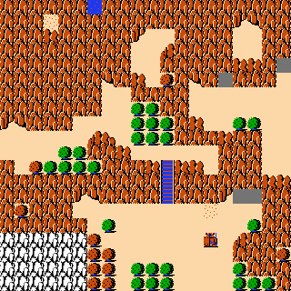
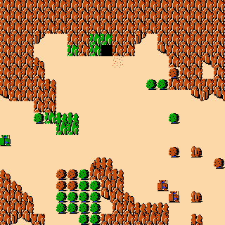

Zelda L-softmax-pixel examples
Predetermined, uncurated seeds 0–9 from the previously completed
100-run 20×20 L-softmax-pixel experiment.
L-context = (UL, U, UR, LEFT); pixel-distance softmax;
tau = 0.1; L weights = (0.5, 1.0, 0.5, 1.0);
UNK distance = 0.5.

Seed 0
tile KL 0.3648; edge KL 0.5662; largest copied patch 42

Seed 1
tile KL 0.3147; edge KL 0.5588; largest copied patch 64

Seed 2
tile KL 0.3010; edge KL 0.5669; largest copied patch 40

Seed 3
tile KL 0.3253; edge KL 0.6863; largest copied patch 48

Seed 4
tile KL 0.2738; edge KL 0.7017; largest copied patch 48

Seed 5
tile KL 0.2629; edge KL 0.6741; largest copied patch 39

Seed 6
tile KL 0.9007; edge KL 1.5166; largest copied patch 36

Seed 7
tile KL 0.3359; edge KL 0.6079; largest copied patch 63

Seed 8
tile KL 0.3981; edge KL 0.7040; largest copied patch 35

Seed 9
tile KL 0.3277; edge KL 0.5160; largest copied patch 60